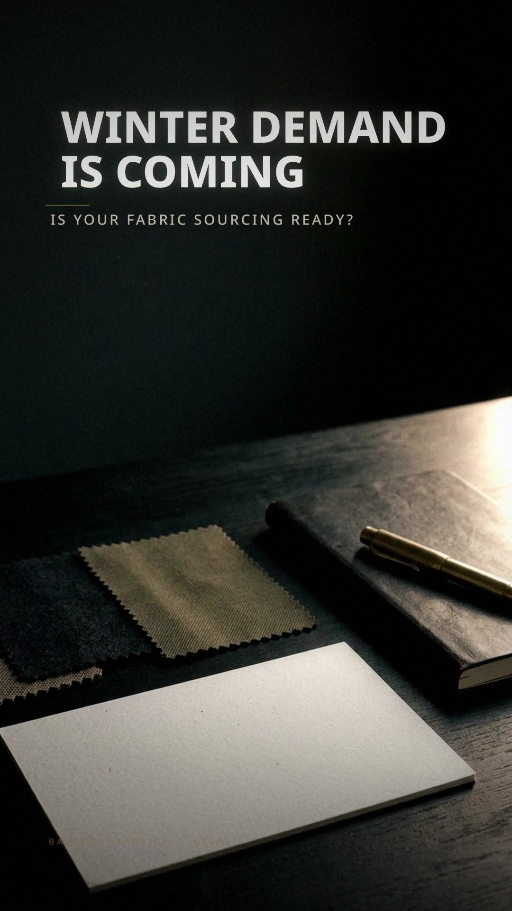

The winter countdown
A dark sourcing desk at dusk. Window light drifts across a blank calendar; paper flutters read as time moving. The camera pushes in and the frame ends on fabric — a texture match-cut into the next scene.
सर्दियों की डिमांड आ रही है… क्या आपकी फैब्रिक सोर्सिंग तैयार है?
“Winter demand is coming… is your fabric sourcing ready?”
- On screen
- WINTER DEMANDIS COMING
IS YOUR FABRIC SOURCING READY? - Camera
- 50 mm feel, slow push-in, 1.03 → 1.14 zoom, light sweep left → right
- Sound
- Low impact · paper flutter ×3 · ticking begins · low riser · texture whoosh